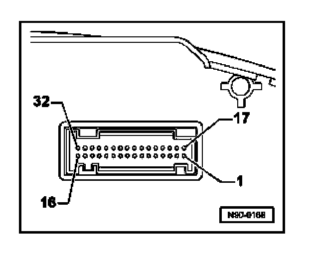
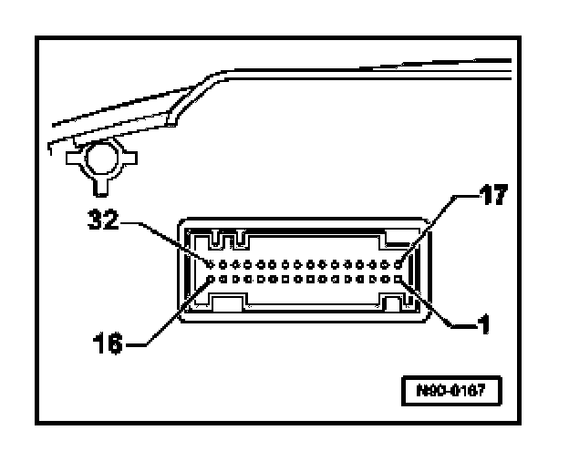

System Diagram
Instrument Cluster Multi-pin Connector Assignments
NOTE: Connector assignments depend on vehicle equipment and engine type.
32-pin multi-pin connector -T32a-, blue

1. Terminal 15, positive
2. Terminal 15, positive
3. Output signal 1 from electronic speedometer
4. Fuel gauge sender 2
5. Fuel gauge sender 1
6. Indicator lamp for low windshield washer fluid
7. Terminal 31, sender Ground (GND)
8. Terminal 30 - positive (B+)
9. Terminal 31, Ground (GND)
10. Oil pressure switch
11. Ambient temperature
12. Warning lamp for generator, terminal 61
13 - 17 Open
18. Terminal 30 S
19. Terminal 30 S
20. Open
21. Open
22. Low coolant level warning lamp
23. Terminal 30, positive (B+)
24. Terminal 31, Ground (GND)
25. Data Link Connector (DLC) K-wire
26 - 28. Open
29. Brake system warning lamp
30. Open
31. Seat belt warning lamp
32. Open
32-pin connector, green

1 - 6. Open
7. Brake pad wear indicator lamp
8. CAN Bus, High
9. CAN Bus Low
10 - 12. Open
13. Parking brake indicator lamp
14 - 17. Open
18. Oil temperature and level signal
19. Powertrain CAN, High
20. Powertrain CAN, Low
21 - 26. Open
27. Convenience CAN, High
28. Convenience CAN, Low
29. Open
30. Emergency mode
31. Infotainment CAN, High
32. Infotainment CAN, Low